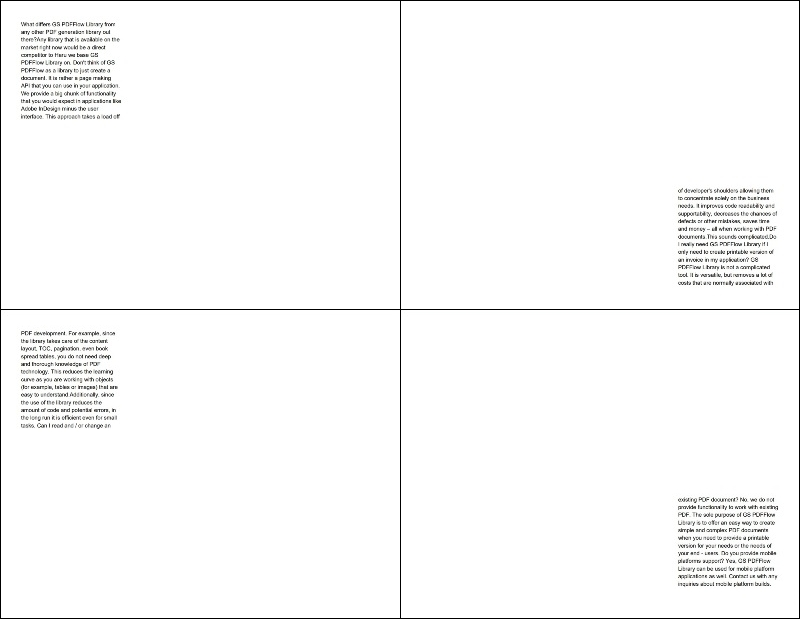
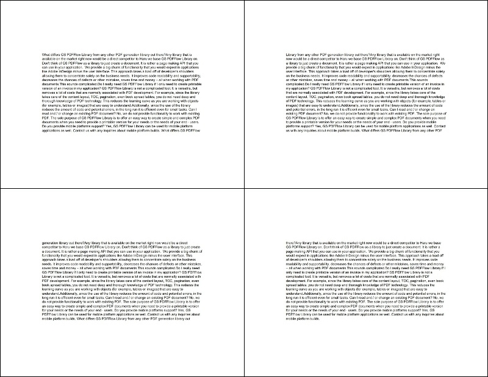
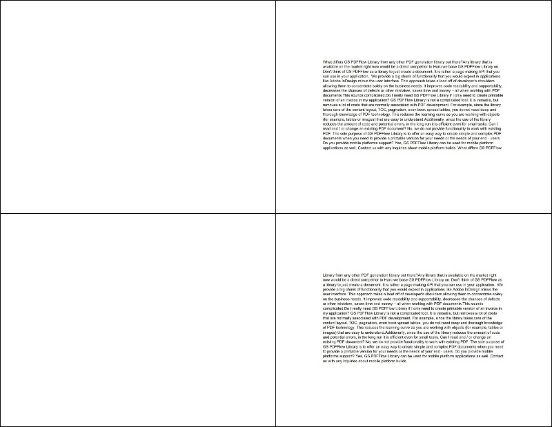
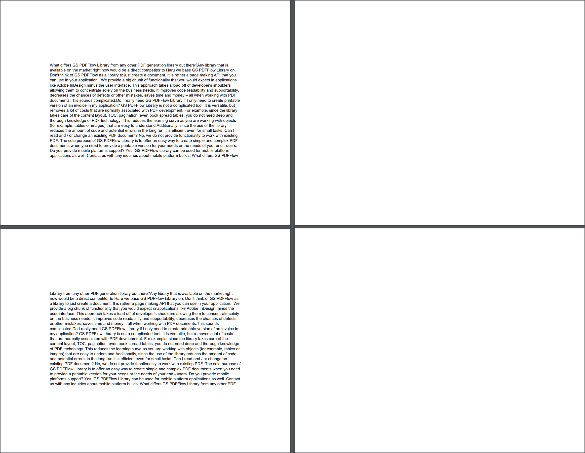

Adding Document Flow Area
Brief
The article describes how to add and configure a document flow area.
Details
Document flow area defines the area where all elements of a section except repeating areas
are located on a page.
It is a box of specified width and height located at a specified distance from the left and top margins of the section.
A document flow area cannot overlap repeating areas.
You need to add a document flow area only if you add a repeating area by coordinates, or if you want the content of your document
to have different positions on odd and even pages.
A document flow area can be set for both odd and even pages of the section and for its odd and even pages separately:
To place the section content in a specified area on both odd and even pages, use
the AddDocumentFlowAreaToBothPages method.
To place the section content in a specified area on odd or even pages, use
the AddDocumentFlowAreaToOddPage or
AddDocumentFlowAreaToEvenPage methods respectively.
If a document flow area is specified only for odd or only for even pages, the alternate pages will be empty.
For each section, you can specify either one document flow area for both odd and even pages
(AddDocumentFlowAreaToBothPages), or one document flow area for
odd pages (AddDocumentFlowAreaToOddPage) and one document flow area for even pages
(AddDocumentFlowAreaToEvenPage).
See also
Examples
Example 1. Add different document flow areas for odd and even pages [hide]
string text = "Some big paragraph of text ....";
//Create a document builder:
DocumentBuilder.New()
.AddSection()
.AddDocumentFlowAreaToOddPage(20, 20, 200, 200)
.AddDocumentFlowAreaToEvenPage(530, 350, 200, 200)
.AddParagraph(text)
.ToDocument().Build("Result.pdf");
The above code will generate the following:

See the documentExample 2. Add a document flow area for both odd and even pages [hide]
string text = "Some big paragraph of text ....";
//Create a document builder:
DocumentBuilder.New()
.AddSection()
.AddDocumentFlowAreaToBothPages(115, 150, 522, 272)
.AddParagraph(text)
.ToDocument().Build("Result.pdf");
The above code will generate the following:

See the documentExample 3. Add a document flow area for even pages [hide]
string text = "Some big paragraph of text ....";
//Create a document builder:
DocumentBuilder.New()
.AddSection()
.AddDocumentFlowAreaToEvenPage(115, 150, 522, 272)
.AddParagraph(text)
.ToDocument().Build("Result.pdf");
The above code will generate the following:

See the documentExample 4. Add a document flow area for odd pages [hide]
string text = "Some big paragraph of text ....";
//Create a document builder:
DocumentBuilder.New()
.AddSection()
.AddDocumentFlowAreaToOddPage(115, 150, 522, 272)
.AddParagraph(text)
.ToDocument().Build("Result.pdf");
The above code will generate the following:

See the document